地政学
フェニックスはアリゾナ州都で、メキシコ国境、先住民の自治地、軍事施設、乾燥地の水利、半導体投資が近接する。南西部の人口移動と国境政策、コロラド川水系の緊張が、州政治と都市の日常を結びつける街です。

🇺🇸 アメリカ合衆国 / アリゾナ州 / World City Atlas
ソノラ砂漠の盆地に広がり、運河、半導体、物流、移民労働、先住民の土地、郊外住宅、猛暑への適応が一つの都市圏で重なるアメリカ南西部の成長都市です。
都市の骨格
フェニックスは山に囲まれた乾いた盆地で、運河と地下水、広い高速道路、低密度の住宅地、半導体工場、医療地区、空港物流が都市の広がりを支えてきた。
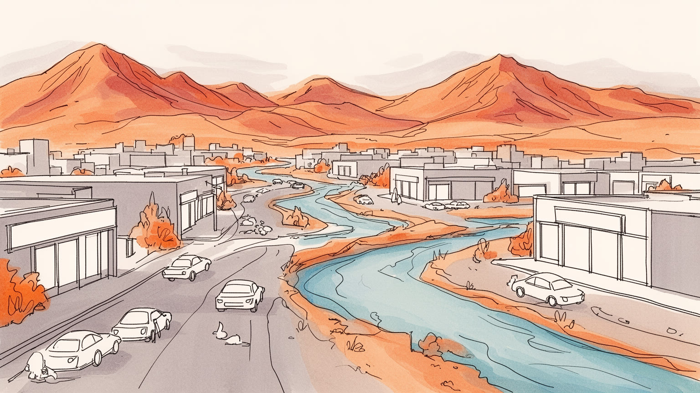
フェニックスはアリゾナ州都で、メキシコ国境、先住民の自治地、軍事施設、乾燥地の水利、半導体投資が近接する。南西部の人口移動と国境政策、コロラド川水系の緊張が、州政治と都市の日常を結びつける街です。
半導体、データセンター、医療、物流、建設、観光、大学が雇用を広げる。空港と高速道路は市場を結ぶが、倉庫、介護、清掃、農業、飲食を支える移民労働と屋外労働の暑さも、この都市経済の現実そのものなのです。
ホホカムの遺構、アキメル・オオダムなど先住民の記憶、メキシコ系文化、教会、球場、カントリー音楽、砂漠の芸術が重なる。移住者の郊外生活と古い土地の記憶が、同じ盆地の現在をつくっています。その重なりも見える。
旅行者は砂漠の山道、博物館、春季キャンプ、リゾートを楽しむが、住民には水道、家賃、車依存、通勤、猛暑、冷房費、学校、郊外の孤立が切実です。景観の美しさと生活の負担を同時に読む都市です。それが特色です。
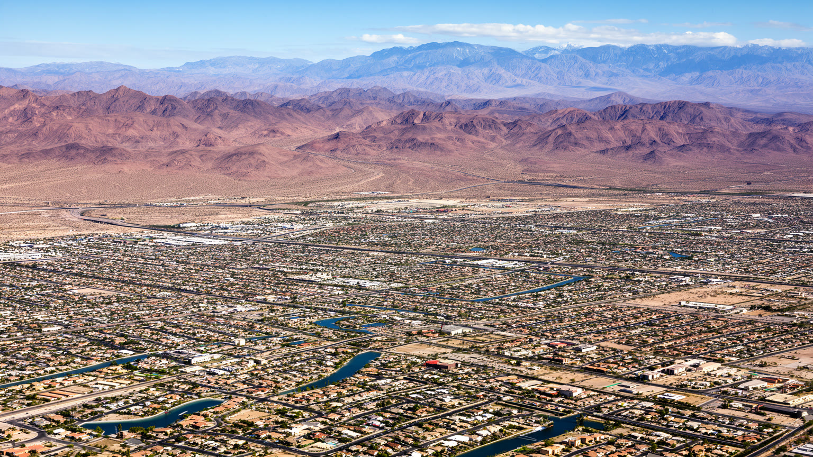
フェニックスを読む入口は、都心の高層建築よりもソノラ砂漠の盆地である。市街地はソルト川流域の広い谷にあり、キャメルバック山、サウス山、マクダウェル山地、エストレラ山地のような岩の輪郭が、どこまでも水平に伸びる住宅地の端を測る物差しになる。乾いた河床、砂礫の扇状地、サボテン、灌木、強い日差しは景観の飾りではなく、土地利用、道路、排水、暑さ、火災、野生生物との距離を決める条件である。雨は少ないが、モンスーン期の短い豪雨はワジを一気に水路へ変え、舗装された都市に洪水を起こす。山の近くは眺望と高級住宅の価値を持つ一方、斜面開発、熱、移動距離、防災の問題も抱える。フェニックスは自然を克服した都市ではなく、砂漠の地形を読み替えながら広がった都市である。地図を平面として見ると単調なスプロールに見えるが、山、乾いた川、運河、低地、保護区を重ねると、都市の成長がどの地形を利用し、どの地形を危険として避けてきたのかが見えてくる。空の広さや夕焼けの色は魅力だが、同じ開放感は日陰の少なさ、徒歩移動の難しさ、熱を逃がしにくい住宅地の問題にもつながる。砂漠地形を意識すると、都市の美しさと脆さが同じ地面から生まれていることが分かる。舗装の端に残る砂地や洗い越しの道にも、都市がまだ砂漠の上に仮置きされている感覚が残る。
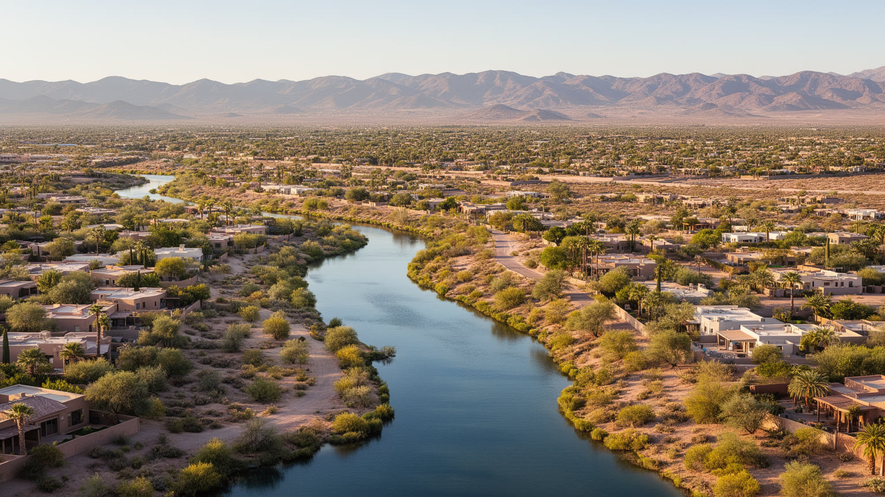
フェニックスの成長は、水の管理なしには説明できない。古代ホホカムの灌漑網はソルト川流域の農耕を支え、その記憶の上に近代の運河、ダム、井戸、貯水池、水道事業が積み重なった。都市が乾いた盆地に見えても、郊外の芝生、半導体工場、プール、ゴルフ場、農地、建設現場、冷房のある生活は、水を遠くから集め、分け、価格を付ける制度で成り立つ。ソルト川計画やセントラル・アリゾナ・プロジェクトは、山地の水、コロラド川水系、地下水を都市と農業へ運ぶ巨大な社会装置である。だが、気候変動と西部の干ばつは、この装置の前提を揺さぶっている。新しい住宅地を増やす時、どの水源を使い、先住民共同体や農業とどのように分け合うのかが政治問題になる。フェニックスの水路は公園のように見える場所もあるが、本質は都市の存続を支える契約とインフラである。水を読むことは、砂漠の美しさを楽しむだけでなく、誰が安く使え、誰が節水を求められ、どの成長が続けられるのかを問うことである。水は蛇口から出る商品である前に、州間交渉、裁判、先住民の権利、農業補助、住宅開発許可をつなぐ政治的な資源である。運河沿いの静かな景観の下には、乾燥地で都市を続けるための複雑な合意が流れている。芝生を砂漠植物へ替える小さな選択も、この都市では水の将来をめぐる公共的な判断になる。
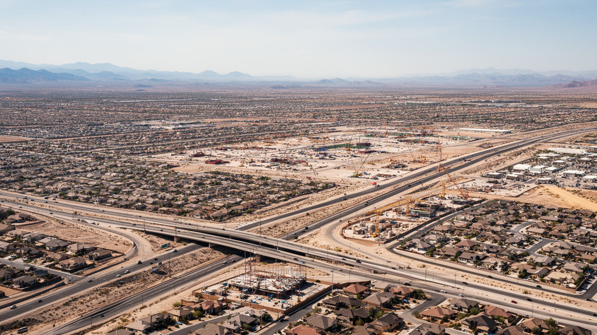
フェニックスは二十世紀後半以降、アメリカで最も目立つ成長都市の一つになった。冷房、自動車、高速道路、安い土地、退職者の移住、軍事と航空宇宙、住宅金融、企業移転が、砂漠の盆地を低密度の大都市圏へ変えた。メサ、テンピ、スコッツデール、グレンデール、チャンドラー、ギルバート、ピオリアなどの自治体は、それぞれ住宅地、大学、観光、半導体、スポーツ施設、商業を抱え、中心市だけでは都市圏を説明できない。スプロールは広い家、車庫、学校、買い物の便利さを提供したが、長い通勤、歩きにくさ、公共交通の弱さ、暑い駐車場、インフラ維持費、水需要も生んだ。郊外の区画は新しさと余裕を約束する一方、同じ形の住宅が砂漠の生態系を押し広げ、熱を蓄える舗装面を増やす。フェニックスの成長を読むには、人口増加を成功として見るだけでなく、都市がどこまで広がれば水、道路、学校、消防、救急、冷房エネルギーを支えられるのかを考える必要がある。成長そのものが都市の誇りであり、同時に最も大きな宿題でもある。新しい分譲地は地図の端を毎年押し広げ、自治体ごとの税収競争も開発を後押しする。だが、中心部の空き地を使い直すこと、歩ける地区を増やすこと、鉄道とバスを生活の選択肢にすることも、成長都市が成熟へ向かうための課題である。広がり方そのものが未来を決める。
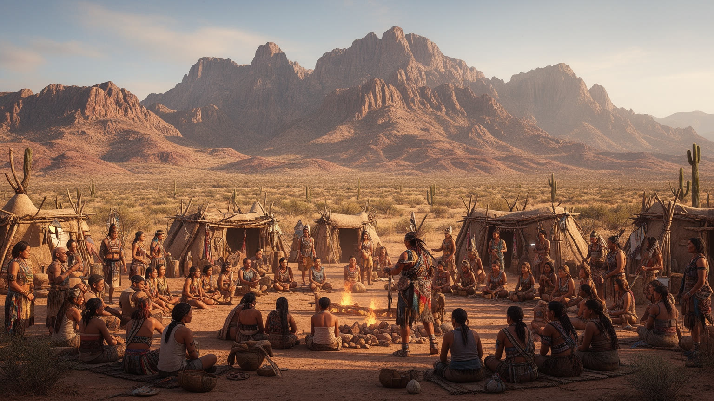
フェニックス都市圏は空白の砂漠に突然生まれたわけではない。ホホカムの灌漑遺構、アキメル・オオダム、ピーパシュ、トホノ・オオダム、ヤバパイなど先住民の土地と記憶が、現代の高速道路や住宅地の下に続いている。周辺には先住民共同体の自治地があり、カジノ、文化施設、水利権、教育、医療、土地利用をめぐる政治が都市圏と結びつく。フェニックスはまたメキシコ国境から遠くない州都であり、移民、難民、国境警備、麻薬取引、家族の往来、二言語教育、州法をめぐる対立が日常の会話に入り込む。南西部の都市であることは、英語圏の郊外都市であることと、スペイン語、先住民言語、植民地化の記憶が同居することを意味する。観光客が砂漠景観を楽しむ時、その土地が誰の祖先の土地で、誰の移動を阻んできたのかを考える必要がある。フェニックスの地政学は国際首都のような派手さではなく、土地、水、国境、自治権、警察、学校、労働市場が生活のすぐ近くで交差する点にある。国境は都市の南にある線だけではなく、家族の電話、送金、学校の言語支援、労働者の不安、政治広告として市内に現れる。先住民の歴史も過去の展示ではなく、現在の権利と地域経済を形づくる力である。土地の名前、博物館の説明、学校教育、開発許可の一つ一つが、誰の歴史を都市の中心に置くかを問う場になる。
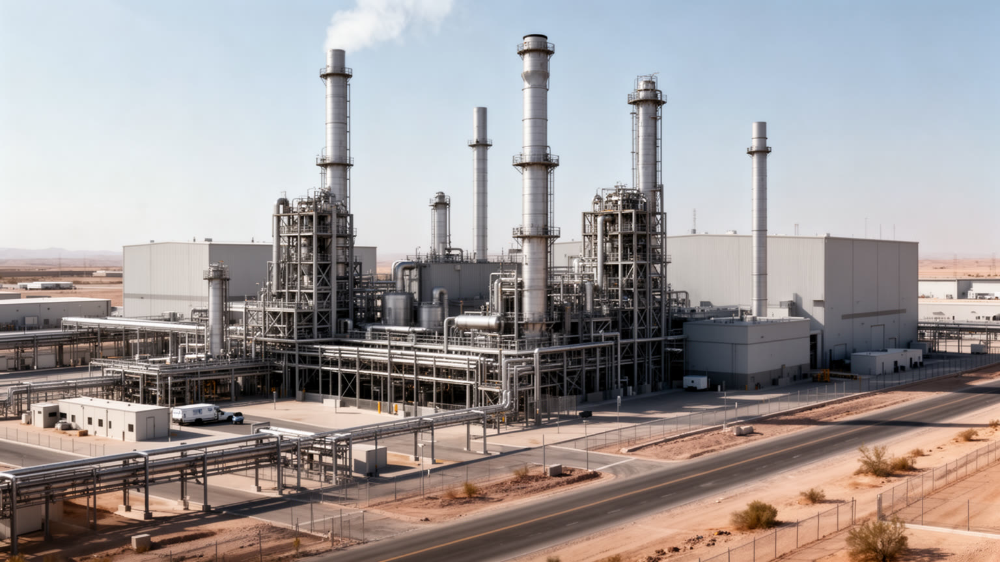
フェニックスの経済は、退職者と観光だけの都市という古い印象を大きく超えている。チャンドラーや北部郊外には半導体工場、研究開発、サプライヤーが集まり、テンピとスコッツデールには大学、金融、ソフトウェア、医療、スタートアップが重なる。スカイハーバー国際空港と州間高速道路は、アメリカ西部、メキシコ、カリフォルニア市場を結ぶ物流の要所であり、倉庫、配送、コールセンター、データセンターも増えている。半導体産業は高賃金の技術職を呼ぶ一方、大量の水、電力、化学物質、クリーンルーム運営、建設労働、国際サプライチェーンに依存する。物流の拡大は雇用を作るが、熱い倉庫、長距離通勤、トラック交通、低賃金のシフト勤務も伴う。フェニックスの産業を読むには、先端工場のニュースだけでなく、空港の夜勤、道路沿いの倉庫、建設現場、冷房費、技能訓練を合わせて見る必要がある。砂漠の成長都市は、テック投資を受け入れるほど、水とエネルギーの制約、労働者の住まい、国際政治の影響をより強く受ける都市になる。大学やコミュニティカレッジが技能教育を担い、企業誘致は税制や土地利用とも結びつく。高度な工場が増えても、働く人が近くに住めなければ、都市の競争力は道路渋滞と住宅費に吸い取られてしまう。産業政策は住宅政策と切り離せないのである。課題は重い。
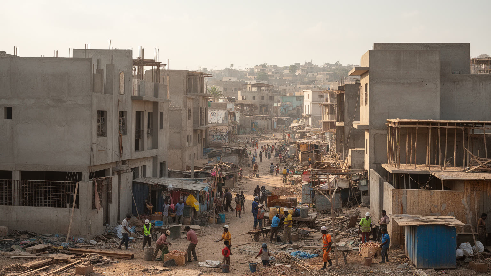
フェニックスの日常は、メキシコ系住民、ラテンアメリカからの移民、先住民、国内の他州から来た家族、退職者、学生、専門職が重なることで成り立つ。建設、造園、ホテル、清掃、介護、飲食、倉庫、農業、配送、屋根工事、道路工事では、暑さの中で働く人の身体が都市の成長を支える。移民労働は見えにくいが、新しい住宅地、リゾートの庭、レストランの厨房、病院の清掃、物流センターの仕分けを動かしている。国境政策や在留資格をめぐる不安は、学校、病院、警察、職場での信頼にも影響する。スペイン語の店、教会、家族経営の食堂、送金、二言語教育は、都市の文化を豊かにする一方、低賃金、住宅難、差別、交通の不便、医療アクセスの壁も残る。フェニックスの労働を読むことは、人口増加の明るい数字の裏で、誰が炎天下に立ち、誰が夜勤をし、誰が冷房の効いたオフィスで働くのかを見ることである。暑い都市では、労働条件そのものが生命の安全と結びつく。都市の成長は、移動してきた人びとの権利と生活が守られて初めて持続する。学校の通訳、診療所、労働者センター、教会の支援は、制度の隙間を埋める都市の安全網になる。移民を労働力としてだけ見るのではなく、家族、文化、政治参加の担い手として読むことが欠かせない。その視点が都市の公平性を測る。生活にも深く届く。
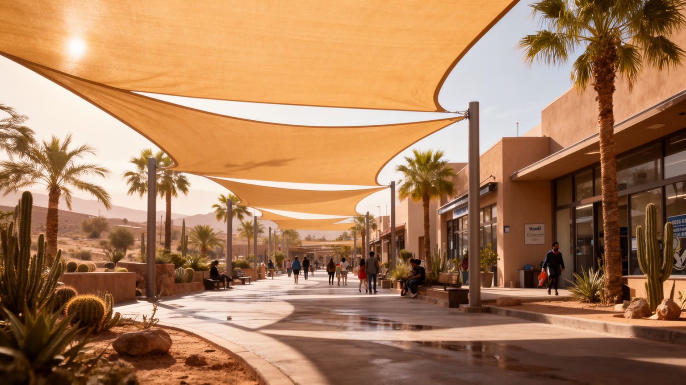
フェニックスを世界的に重要な都市にしている要素の一つが、猛暑への適応である。夏の気温は長く危険な水準に達し、夜も舗装と建物が熱を放ち続ける。冷房は生活の前提だが、電気代、停電、古い住宅、屋外労働、ホームレス、高齢者、車を持たない人には大きなリスクが残る。暑さは自然現象であると同時に、都市設計の結果でもある。広いアスファルト、駐車場、日陰の少ない歩道、バス停、低い樹冠、断熱の弱い住宅は、同じ気温でも身体への負担を増やす。市は冷却センター、街路樹、反射性舗装、熱警報、給水、救急対応を進めているが、最も暑い場所ほど低所得地区と重なりやすい。フェニックスの気候適応は、未来の話ではなく現在の公共安全である。都市を歩けるか、バスを待てるか、屋根工事を何時に止めるか、学校の運動をどう管理するかが、毎日の政策になる。暑さを読むことは、砂漠都市の美しい夕景だけでなく、熱が誰の生活を早く傷つけるのかを読むことである。救急搬送の増加、墓地や路上での死、冷房を止められない家計は、気候変動を抽象論ではなく生活の問題に変える。日陰の一本、給水所、夜間の避難場所も、ここでは重要な都市インフラである。暑さに強い都市とは、耐える人を増やす都市ではなく、危険な時間と場所を減らす都市でなければならない。設計の責任である。
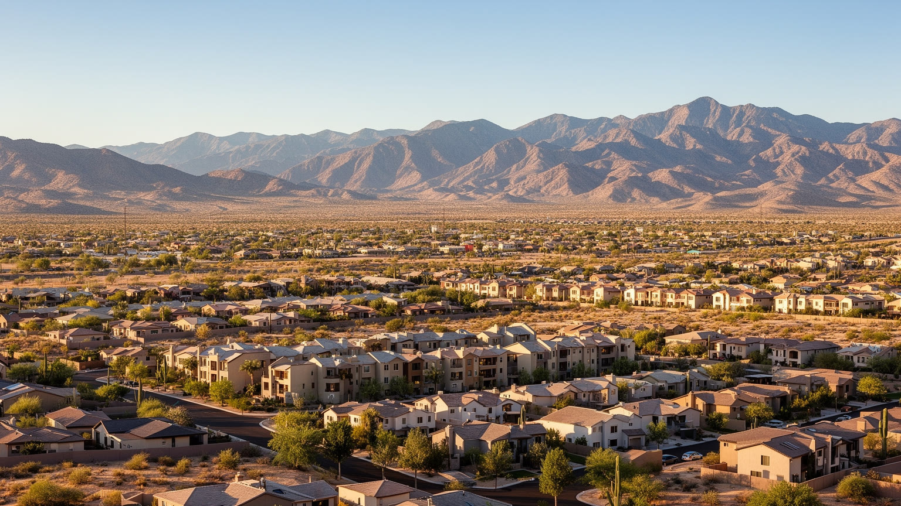
フェニックスの住宅は、広い敷地と手頃な価格を求める人びとを長く引きつけてきた。カリフォルニアや中西部からの移住者、退職者、若い家族は、郊外の分譲住宅、学校、ショッピングセンター、車で移動する生活に魅力を見いだした。しかし人口増加が続くと、家賃と住宅価格は上がり、低所得世帯や若い労働者は中心部からも郊外からも押し出されやすくなる。車がないと仕事、学校、病院、食料品店へ届きにくく、暑さの中で徒歩やバス移動をする負担は大きい。新しい集合住宅や都心再開発は選択肢を増やす一方、古い地区の家賃上昇と住民の入れ替わりも起こす。郊外の住宅地は静かで安全に見えるが、長い通勤、庭の水、冷房費、自治体サービス、火災や洪水への備えを必要とする。フェニックスの暮らしを読むには、家の広さだけでなく、暑い日にどこへ行けるか、冷房を払えるか、子どもが学校へ通えるか、年を取っても車なしで暮らせるかを見る必要がある。住宅の問題は、砂漠都市の水、交通、気候、公平性の問題と切り離せない。ホームレスの増加は、暑さの厳しい都市では命に直結する住宅危機でもある。手頃な賃貸、日陰のある歩道、近くの診療所、バスの本数は、住宅政策の外側に見えて実は住み続ける条件そのものになる。郊外の安心は、維持費と移動の負担を誰が払うかで評価が変わる。
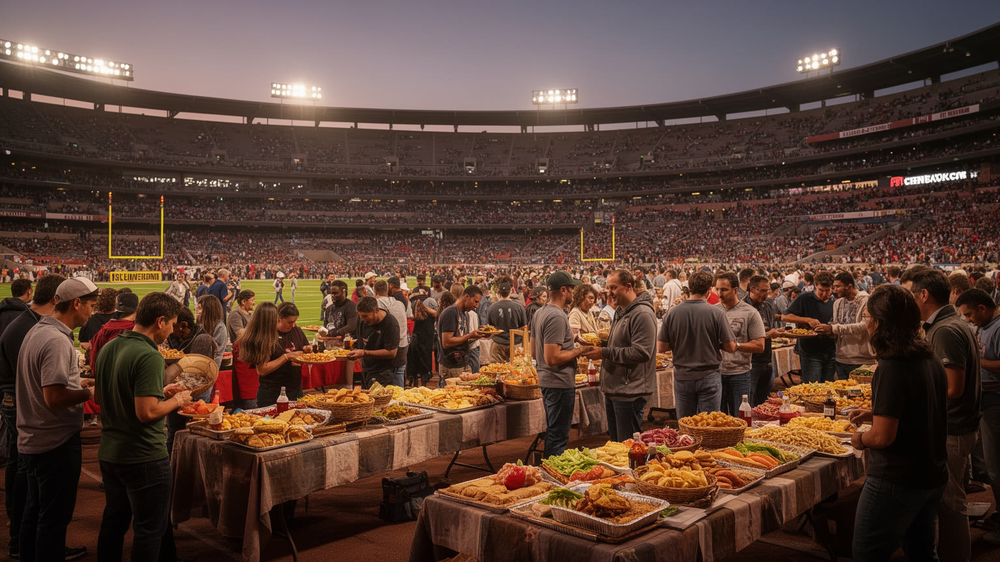
フェニックスの文化は、砂漠のリゾートだけでは語れない。メキシコ系料理、ソノラ風の小麦粉トルティーヤ、タコス、チレ、バーベキュー、先住民の食文化、移民のベーカリー、クラフトビール、郊外の家族向けレストランが、都市の味を作っている。食は国境地帯の歴史と労働を映し、厨房、農産物、家族経営、移民のネットワークに支えられる。スポーツも都市の帰属を作る重要な場である。サンズ、ダイヤモンドバックス、カーディナルス、コヨーテの記憶、春季キャンプ、ゴルフ、大学スポーツは、州外から来た住民を同じ都市圏の会話へつなぐ。試合の日の都心、郊外球場、スポーツバー、駐車場の混雑は、車依存の都市で人が集まる数少ない共同体験でもある。食とスポーツは軽い娯楽に見えるが、どの地区に店が残り、誰が厨房で働き、家族がどの価格で外食でき、猛暑の中で観戦をどう安全に行うかという生活課題を含む。フェニックスの文化を読むには、砂漠の夕日と同じくらい、食卓、球場、教会の集まり、学校の試合を見る必要がある。新しく来た住民が多い都市では、応援するチームや通う店が地域への帰属を作る手がかりになる。食とスポーツは、分散した郊外都市圏で人が顔を合わせる貴重な時間でもある。味と応援は、移住者の多い街に共有の記憶を少しずつ作る。休日の行き先にもなる。
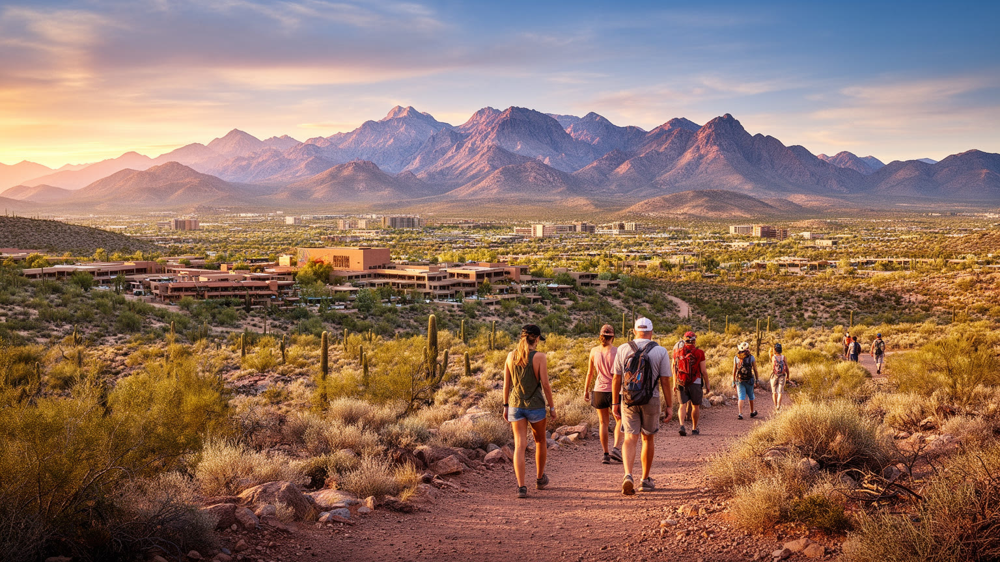
フェニックス観光の強さは、都市と砂漠景観が近いことにある。キャメルバック山、サウス・マウンテン、パパゴ公園、砂漠植物園では、サボテン、赤い岩肌、乾いた空、広い眺望を短時間で体験できる。ハード美術館は先住民文化を学ぶ入口になり、楽器博物館、球場、春季キャンプ、スコッツデールのギャラリー、リゾート、ゴルフ場は、旅行者の滞在を多様にする。だが観光は単に景色を消費するだけではない。トレイルの混雑、熱中症、救助、駐車場、水利用、リゾート労働、先住民文化の扱い方が都市の課題になる。冬の暖かさは観光資源だが、夏の猛暑は旅行の時間帯と安全を制限する。フェニックスを訪れるなら、砂漠を空白の自然として見るのではなく、人が長く暮らし、祈り、交易し、水を引き、土地を守ってきた場所として読む必要がある。観光地の美しい眺めと、そこへ向かう道路、働く人、救急体制、水の使用は同じ地図にある。景観の魅力は、都市がその砂漠をどれだけ慎重に扱えるかによって保たれる。リゾートの涼しい中庭と、バス停で日差しを避ける住民の距離も都市の現実である。観光が地域を豊かにするには、文化の紹介、雇用の質、環境への負担を同時に考える必要がある。短い滞在でも、水筒、日陰、土地の歴史を意識すると、景観はより深く読める。歩く速度が理解を変える。
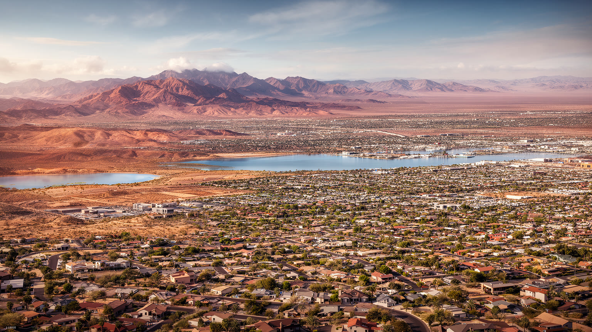
フェニックスを読むことは、アメリカ南西部の成長と限界を同時に見ることである。山に囲まれた盆地、運河、水利権、郊外住宅、高速道路、半導体投資、空港物流、国境地帯、先住民の土地、移民労働、猛暑が一つの都市圏に集まっている。人口増加は活力を示し、産業投資は雇用を生むが、水、電力、住宅、交通、熱への備えが追いつかなければ、成長は生活の不安へ変わる。フェニックスは未来都市の実験場ではなく、すでに暑い未来を生きている現実の都市である。だから評価すべきなのは、どれだけ人を呼び込めるかだけではない。屋外で働く人を守れるか、低所得地区に日陰と冷却の手段が届くか、先住民共同体の水と土地の権利を尊重できるか、車を持たない人も移動できるか、住宅価格の上昇を抑えられるかが問われる。フェニックスの重要性は、砂漠の中に都市を作った大胆さではなく、その大胆さの後始末を公共の課題として引き受けられるかにある。美しい夕景、広い道路、新しい工場の向こうに、二十一世紀の乾燥地大都市が直面する問いが見えてくる。都市圏が広いほど、解決策も一つの市役所だけでは足りない。水、交通、住宅、気候、労働を自治体境界を越えて扱えるかが、フェニックスを単なる成長物語から持続する都市へ変える条件になる。その読み方は、乾燥化する他都市にも通じる。